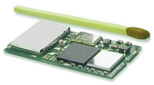
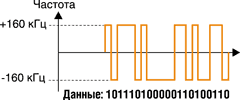
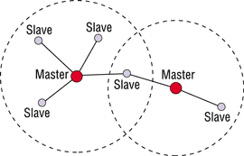
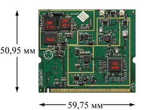

Алексей Борзенко,
доцент РГРТА
Alex@csk.ryazan.ru
Часто говорят, что ничто не приближает нас к будущему быстрее, чем беспроводные технологии. Действительно, исключив кабельные соединения, пользователи ПК получают свободу и мобильность. Упрощаются взаимодействие и обмен информацией: два пользователя мобильных компьютеров смогут вместе работать над одним файлом, и по окончании работы у обоих останутся отредактированные копии этого документа, так что не придется где-то подключаться к сети, чтобы отправить файл. Дома легко будет синхронизировать информацию о контактах в сотовом телефоне с базой данных в компьютере. И наоборот, набрав информацию на компьютере, можно будет передать ее на сотовый телефон.
По мере дальнейшего распространения беспроводных технологий процесс синхронизации данных или извлечения свежей информации из Интернета станет автоматическим - он будет происходить без участия клиента. Просто у пользователя под рукой всегда будут самые свежие и точные данные, и дважды сверять информацию больше не придется.
Но на рынке беспроводной связи по-прежнему остается открытым вопрос о стандартизации. Разумеется, стандартов, описывающих сходные процессы и нацеленных на применение в конкретной области, не может быть много. В конце концов самый проработанный для промышленности стандарт становится лидирующим. Но зачастую случается так, что, пока рынок молод, параллельно живет и развивается несколько технологий. И сегодня одна из них - технология Bluetooth.
Что в имени твоем
Разработку технологии Bluetooth начала компания Ericsson (http://www.ericsson.com) еще в 1994 г. Именно там была сформирована команда специалистов, которая и начала работы. Первоначальной их целью было получение нового радиоинтерфейса с низким уровнем энергопотребления и невысокой стоимостью, который позволил бы устанавливать связь между сотовыми телефонами и беспроводными гарнитурами. Но уже в начале 1998 г. пять крупнейших компаний компьютерного и телекоммуникационного рынка - Ericsson, IBM, Intel, Toshiba и Nokia - объединились для совместной разработки технологии беспроводного соединения мобильных устройств. 20 мая 1998 г. была официально представлена специальная рабочая группа SIG (Special Interest Group), призванная обеспечить беспрепятственное внедрение технологии, которая получила название Bluetooth.
| Рис. 1. Одна из первых реализаций Bluetooth.
|
Размах и масштабы задач, поставленных перед разработчиками спецификации Bluetooth, равно как и стремительное расширение сферы ее применения, привели к тому, что было решено привлечь в состав инициативной группы новых участников, способных разнообразить специализацию группы SIG за счет накопленного опыта и знаний в смежных областях. В течение нескольких лет к инициативной группе присоединились сотни компаний, среди которых были разработчики ПО; производители микросхем, сетевого и периферийного оборудования, мобильных ПК, карманных компьютеров, потребительской электроники; автомобильные концерны, а также создатели измерительной техники (список фирм-участниц можно найти по адресу http://www.bluetooth.com). Сейчас в группу входит более 2000 участников.
Технология Bluetooth полностью открыта. Любая компания, подписавшая лицензионное соглашение, может войти в состав Bluetooth SIG и начать создавать продукты на ее основе. Чтобы исключить появление несовместимых устройств, разработаны подробные спецификации, включающие детальное описание методов использования нового стандарта и характеристики протоколов передачи данных.
Сегодня Bluetooth - это современная технология беспроводной передачи данных, позволяющая соединять друг с другом практически любые устройства. Технология ориентирована на мобильную связь, т. е. на создание по мере надобности прозрачных и гибких соединений. Она оптимизирована для передачи по таким соединениям голоса и данных независимо от инфраструктуры WAN/LAN. Благодаря своим простоте и изяществу, Bluetooth, как уверены многие специалисты, вне конкуренции в области создания небольших локальных сетей и беспроводного объединения устройств в пределах дома, офиса или, скажем, автомобиля.
Поначалу многие полагали, что Bluetooth будет конкурировать с такими технологиями, как IEEE 802.11, HomeRF и IrDA. Впрочем, последняя, будучи самой распространенной технологией беспроводного соединения компьютеров и периферийных устройств, не предназначена для построения персональных сетей. Напомним, что IrDa обеспечивает связь лишь в зоне прямой видимости и только по принципу "точка-точка". В свою очередь, спецификация HomeRF предназначена для связи бытовых аудио- и видеоустройств и построения домашних радиосетей.
На самом деле Bluetooth не конкурирует с другими стандартами радиосвязи, а дополняет их. Эта технология относится к семейству беспроводных сетей Personal Area Networks (PAN) и может использоваться для связи портативных компьютеров, мобильных телефонов, электронных органайзеров, принтеров, факсов, сканеров и других устройств, которые прежде можно было соединять только через локальную сеть. Соединению бытовых приборов (холодильников, аудиосистем и т. п.) до сих пор препятствовала сложность организации домашней сети передачи данных, но при помощи технологии Bluetooth сделать это будет совсем не трудно. Все эти устройства смогут с высокой скоростью обмениваться данными на коротких расстояниях без кабелей и не требуя прямой видимости.
В свое время самой "громкой" Bluetooth-новинкой стал комплект беспроводной гарнитуры (handsfree) компании Ericsson. Это новое устройство, получившее название Headset, состоит из наушника и микрофона и способно работать на расстоянии 10 метров от базы (база в данном случае - это сотовый телефон со встроенным чипом Bluetooth, рис. 2). Для некоторых моделей телефонов, не имеющих встроенной платы Bluetooth, были созданы специальные адаптеры.
|  | Рис. 2. Модуль Bluetooth.
|
По мнению аналитиков из Cahners In-Stat Group и Gartner Group, применение технологии Bluetooth может вызвать настоящую революцию в сфере персональных коммуникаций, расширив возможности и улучшив взаимодействие мобильных устройств.
Синий ЗубBluetooth буквально переводится с английского как "синий зуб". Однако своим названием технология обязана вовсе не дантистам, а скорее историческому недоразумению. Bluetooth - так английские летописцы назвали датского короля викингов, жившего в 910-940 гг. Вообще говоря, король Харальд Блютус (Harald Bluetooth) вошел в историю как собиратель разрозненных скандинавских земель: в частности, ему приписывается объединение Дании и Норвегии и введение новой, обязательной для всех религии - христианства. А технология Bluetooth как раз и призвана объединить мир мобильной электроники и радикально изменить наше представление о возможностях телекоммуникаций. Есть две версии происхождения "синезубого" королевского прозвища. Первая - у Харальда действительно были очень белые, почти голубые зубы. Но правдоподобнее кажется другая версия: Bluetooth - исковерканное прозвище короля на языке викингов. Дело в том, что у него была смуглая кожа и темные волосы, что не типично для белокожих и светловолосых викингов. За это Харальда прозвали Bletand ("чернявеньким"). А английские летописцы, вероятно, просто заменили это прозвище понятным для них словом. Так что мощная технология названа в честь датского христианского короля, твердой рукой правившего во времена набегов викингов на Западную Европу. Заметим еще, что людей всегда зачаровывают имена, напоминающие о необычных, таинственных историях.
|
Технические детали
Итак, технология Bluetooth позволяет заменить множество разнообразных кабелей одним универсальным радиосоединением. По сути, Bluetooth - это глобальная спецификация беспроводной связи. Частью любой Bluetooth-системы могут быть принтеры, карманные и настольные компьютеры, факс-машины, клавиатуры, джойстики, сотовые телефоны, бытовая техника и другие цифровые устройства.
Частоты
Поскольку для связи в радиочастотном диапазоне характерен высокий уровень помех, технология Bluetooth использует быстрый отклик и скачкообразное изменение несущей частоты. Чтобы избежать интерференции с другими источниками сигналов, частота изменяется после каждого приема или передачи одного пакета информации. Благодаря этому ограничивается воздействие домашних и профессиональных микроволновых приборов, например, СВЧ-печей. Чтобы обеспечить помехоустойчивость на более длинной дистанции, в Bluetooth предусмотрена прямая коррекция ошибок FEC (Forward Error Correction).
Основополагающий принцип построения систем Bluetooth - метод расширения спектра при скачкообразном изменении частоты (FHSS - Frequency Hop Spread Spectrum). Весь выделенный для Bluetooth-радиосвязи частотный диапазон 2,402-2,480 ГГц разбит на N частотных каналов. Полоса каждого канала - 1 МГц, разнос каналов - от 140 до 175 кГц. Для кодирования пакетной информации используется частотная манипуляция (рис. 3). Следует особо отметить, что в качестве частотного диапазона в спецификации Bluetooth выбрана полоса 2,45 ГГц ISM (Industrial-Scientific-Medical), которую можно использовать без дополнительного лицензирования практически во всех странах мира. Максимальная скорость передачи данных между устройствами достигает 1 Мбит/с. При полном дуплексе в режиме передачи используется схема разделения времени. Временные интервалы могут резервироваться и для синхронной передачи. Каждый пакет информации передается в течение одного временного интервала, однако в особых случаях количество таких интервалов может быть увеличено до пяти.
|  | Рис. 3. Кодирование информации.
|
Для США и Европы количество каналов равно 79; исключение составляют Испания и Франция, где для Bluetooth применяется 23 частотных канала. Смена каналов проводится по псевдослучайному закону с частотой 1600 Гц. Постоянное чередование частот позволяет радиоинтерфейсу Bluetooth транслировать информацию по всему диапазону ISM и избежать воздействия помех со стороны устройств, работающих в этом же диапазоне. Если данный канал зашумлен, то система перейдет на другой, и так будет происходить до тех пор, пока не обнаружится канал, свободный от помех.
Модули Bluetooth работают тактами (слотами) длительностью 625 мкс. Каждому модулю в пределах каждого такта назначается соответствующий частотный канал и режим передачи или приема. Таким образом, базовая частота может изменяться, принимая одно из 79 значений с интервалом 1 МГц, начиная от 2,402 ГГц и заканчивая 2,480 ГГц. Скорость перехода с одной частоты на другую может достигать 1600 Гц. Номинальный диапазон связи - от 10 см до 10 м, однако при дополнительном усилении сигналов максимальное расстояние увеличивается до 100 м. По имеющимся данным, дальность связи от 0 до 30 м обеспечивается при выходной мощности передатчика 0 дБм (1 мВт). При увеличении мощности до 20 дБм дистанция увеличивается до 100 м.
Типы передачи данных
Основной для данной технологии протокол управления логическими каналами и адаптацией L2CAP (Logical Link Control and Adaptation Protocol) предусматривает два типа передачи данных. Асинхронный протокол коммутации пакетов без установления соединений ACL (Asynchronous Connectionless Links), основанный на Ethernet, обеспечивает асимметричную передачу. Второй тип передачи - по синхронному протоколу коммутации каналов с установлением соединений SCO (Circuit-switched Synchronous Connection Oriented links). Спецификация регламентирует один асинхронный канал обмена данными или до трех синхронных каналов передачи голоса. При другой схеме работы возможна организация одного асинхронного канала обмена данными и одного синхронного канала передачи голоса.
Синхронная связь SCO рассчитана на установление симметричного соединения "точка-точка" и служит преимущественно для передачи речевых сообщений. Скорость передачи информации SCO равна 64 кбит/с. Второй вид связи, ACL, предназначен для пакетной передачи данных. Он поддерживает симметричные и асимметричные соединения типа "точка-много точек". По асинхронному каналу асимметричная связь осуществляется на скорости 721 кбит/с в одном направлении и 57,6 кбит/с - в другом. При симметричном обмене скорость в обоих направлениях достигает 432,6 кбит/с. Пакеты данных имеют фиксированный формат. В начале блока помещается 72-разрядный код доступа. Он может применяться, в частности, для синхронизации устройств. За ним следует 54-разрядный заголовок пакета, содержащий контрольную сумму пакета и информацию о его параметрах (например, о повторной передаче блока данных). Замыкает пакет область, непосредственно содержащая пересылаемую информацию. Размер этой области варьируется от 0 до 2745 бит.
Сети Piconet и Scatternet
Различные Bluetooth-устройства соединяются друг c другом автоматически, стоит им только оказаться в пределах досягаемости. Пользователь не должен заботиться о кабелях, драйверах и т. п. Все что от него требуется, - это позаботиться о том, чтобы Bluetooth-устройства находились достаточно близко друг к другу. По способу соединения можно выделить сети Piconet и Scatternet (рис. 4) - это базовые понятия технологии Bluetooth.
|  | Рис. 4. Сети Piconet и Scatternet.
|
Bluetooth-устройства могут устанавливать как соединения типа "точка-точка", если имеется только два устройства, так и "точка-много точек", когда одно устройство одновременно работает с несколькими другими. В последнем случае устройство, которое обслуживает несколько соединений, называется master (главное), а подключенные устройства - slave (управляемые). Кроме устройств, которые активно обмениваются данными (но являются управляемыми), есть еще множество неактивных управляемых устройств, которые не могут обмениваться данными с управляющим, пока заняты все каналы, но тем не менее остаются синхронизированы с ним. Такая структура называется Piconet.
Иными словами, Piconet - это сеть, содержащая от двух до восьми устройств, которые общаются между собой с соблюдением протоколов Bluetooth. По определению, все устройства Bluetooth равноправны, но тем не менее при образовании Piconet одно из них становится главным, управляющим, а другие - подчиненными. Главное устройство синхронизирует частоту и ее изменения для всех остальных устройств в Piconet. Для распознавания любого устройства в сети выделяется трехразрядный MAC-адрес. В случае необходимости любое управляемое устройство в Piconet может стать управляющим, поменявшись ролью со старым "лидером".
Несколько независимых и несинхронизируемых сетей Piconet, между которыми возможен обмен информацией, образуют распределенную сеть Scatternet. Такие сети могут иметь топологию типа "точка-точка" и "точка-много точек".
В Scatternet может объединяться столько Bluetooth-устройств, сколько требуется, логические связи могут образовываться так, как требуется, и изменяться как угодно. Единственное условие: различные сети Piconet, входящие в одну Scatternet, должны использовать разные каналы связи, т. е. работать на разных частотах и иметь разные каналы смены частот. Всего спецификация предусматривает 10 вариантов подобных последовательностей: пять с циклом в 79 смен и пять - с циклом в 23 смены. Такой алгоритм позволяет эффективно бороться с затуханием радиосигнала и интерференцией.
Установление соединения
Как уже говорилось, одна из важнейших особенностей технологии Bluetooth - автоматическая установка соединения между Bluetooth-устройствами, находящимися в пределах досягаемости. Поэтому первое, с чего начинается работа такого устройства в незнакомом окружении, - поиск других Bluetooth-устройств. Для этого посылается запрос, и ответ на него зависит не только от наличия в радиусе связи активных Bluetooth-устройств, но и от режима, в котором находятся эти устройства. На данном этапе возможны три основных режима.
В первом режиме устройства всегда отвечают на все полученные ими запросы. Второй режим подразумевает, что устройства могут отвечать на запросы ограниченное время или должны отвечать только при соблюдении определенных условий. И, наконец, в третьем режиме устройства не отвечают на новые запросы. Но это еще не все. Даже если удается обнаружить устройство, оно может быть доступным (подключаемым) и недоступным (неподключаемым). В последнем случае устройство не позволяет настроить некоторые важные параметры соединения; в результате его удается обнаружить, но обмениваться данными с ним нельзя. Если устройство находится в подключаемом режиме, то на этом этапе Bluetooth-устройства договариваются между собой об используемом диапазоне частот, размере страниц, количестве и порядке последовательностей смены частот и других физических параметрах соединения.
Если процесс обнаружения прошел нормально, то новое Bluetooth-устройство получает набор адресов доступных устройств, и за этим следует процесс выяснения имен всех доступных Bluetooth-устройств из списка. Каждое Bluetooth-устройство должно иметь свой глобально уникальный адрес, но на уровне пользователя обычно используется не этот адрес, а имя устройства, которое может быть любым, и не обязательно глобально уникальным. Согласно спецификации, Bluetooth-устройства не обязаны принимать больше первых 40 символов имени другого Bluetooth-устройства. Если же устройство имеет небольшой экран и ограниченную вычислительную мощь, то количество символов, которое оно примет, может быть уменьшено до 20.
Еще одна важнейшая особенность технологии - автоматическое подключение Bluetooth-устройств к службам, предоставляемым другими Bluetooth-устройствами. Вообще говоря, получение или предоставление каких-либо услуг - это то, ради чего все и затевалось, поэтому для поиска возможных услуг используется специальный протокол, называемый Service Discovery Protocol (SDP).
Перед каждым соединением в Piconet все устройства находятся в режиме Standby. В нем они периодически, каждые 1,28 с, "слушают" эфир, а точнее, сообщения на 32 фиксированных частотах, определенных для конкретного устройства. Количество таких частот может варьироваться в зависимости от географического региона.
Процедура соединения инициируется одним (любым) из устройств, которое и становится главным в Piconet. Сначала главное устройство посылает сообщение Page (если адрес приемного устройства известен) или Inquiry (если информация об адресе отсутствует). Инициируя состояние Page, мастер-устройство посылает пакет из 16 page-сообщений на 16 различных частотах, нумеруя управляемые приборы. Если ответа нет, то следует передача на оставшихся 16 частотах. Максимальное время между началом инициализации и нахождением управляемого устройства составляет 2,56 с, что равно удвоенному периоду прослушивания "эфира" (1,28 с). Обычно запрос Inquiry используется для поиска общедоступных принтеров, факс-машин и прочего оборудования с неизвестными адресами.
Энергосбережение
В сети Piconet предусмотрены режимы энергосбережения, которые задействуются в отсутствие передачи данных. Управляющее устройство может перевести любое управляемое в режим Hold, когда будет функционировать только внутренний таймер. Заметим, что и само управляемое устройство может запросить перевод в этот режим. Обмен данными начинается мгновенно, как только устройство выходит из этого режима.
Два других режима энергосбережения - Sniff и Park. В режиме Sniff устройства в Piconet "слушают" эфир реже, благодаря чему могут более эффективно использоваться по прямому назначению. Временной Sniff-интервал программируется и зависит, например, от типа программного приложения, выполняемого на компьютере. В режиме Park устройство синхронизировано с Piconet, но не принимает участия в трафике. "Запаркованное" устройство отказывается от своего MAC-адреса и время от времени "слушает" команды от мастера о ресинхронизации или иные широковещательные сообщения.
Защита данных
Естественно, технология Bluetooth не могла обойтись без такой важной вещи, как защита передаваемых данных. В спецификации Bluetooth предусмотрена защита конфиденциальной информации, передаваемой между устройствами на физическом уровне. Аутентификация базируется на алгоритме запрос-ответ, а для кодирования информации могут использоваться секретные ключи длиной до 64 разрядов.
В зависимости от выполняемых задач, устройство может находиться в одном из трех режимов защиты:
- устройство не может самостоятельно инициировать защитные процедуры;
- устройство не инициирует защитные процедуры, пока не установлено и не настроено соединение. После того как соединение установлено, процедуры защиты обязательны и определяются типом и требованиями используемых служб;
- защитные процедуры инициируются в процессе установления и настройки соединения. Если удаленное устройство не может пройти требований защиты, то соединение не устанавливается.
Естественно, что второй и третий режимы могут использоваться вместе, т. е. сначала устанавливается защищенное соединение, а потом оно дополнительно защищается в соответствии с требованиями и возможностями конкретной службы.
В основе системы безопасности Bluetooth, используемой в последнем случае, лежит понятие сеансового ключа, который образуется в процессе соединения двух устройств и используется для идентификации и шифрования передаваемых данных. Для генерации ключа могут использоваться самые различные составляющие, от заранее известных обоим устройствам значений до физических адресов устройств. Комбинируя защиту на уровне соединения с защитой на уровне приложений, можно создавать достаточно надежно защищенные соединения. Тем не менее считается, что очевидной слабостью Bluetooth с точки зрения построения защищенных соединений остается возможность перехвата трафика.
Bluetooth + 802.11b = Blue802
До недавнего времени продвижение концепции Bluetooth оставалось прерогативой коммерческих компаний. Внимание же правительственных учреждений было сконцентрировано скорее на политике распределения частот, нежели на функциях и потенциальных приложениях протокола. Однако ситуация, похоже, начинает меняться. Европейский Союз в рамках проекта Information Society Technologies ("Технологии информационного общества") сформировал множество групп, работающих над различными приложениями (для автомобилей, медицины и т. д.), в основу которых заложено применение протокола Bluetooth.
Эксперты Forrester Research утверждают, что Bluetooth и Wi-Fi (802.11b) - это не конкурирующие, а скорее смежные технологии: им уготована разная роль, и они будут встраиваться в разные устройства. Стандарт Wi-Fi получит распространение как средство подключения к частным и публичным сетям. В этом году не менее 10% ноутбуков будут снабжены интерфейсом Wi-Fi, а к 2006 г. доля таких ноутбуокв увеличится до 72%. Bluetooth, в свою очередь, заполнит другие ниши и помимо мобильных телефонов и КПК будет встраиваться в различные бытовые приборы. Кроме того, технология найдет применение в решениях для вертикальных рынков. К 2006 г. 73% мобильных телефонов и 44% КПК будут иметь средства Bluetooth.
Во время своего выступления на конференции Windows Hardware Engineering Conference (WinHEC) 2002 Билл Гейтс отметил: "ПК в настоящее время превращается в центр управления разнообразными интеллектуальными устройствами, число которых постоянно увеличивается. Мы полагаем, что данная тенденция значительно ускорится в предстоящем Цифровом Десятилетии, и на место отдельных ПК, телевизора, телефона и т. д. придут комплексные решения, обеспечивающие пользователю весь необходимый ему набор функциональных возможностей". Очевидно, что одна из основных ролей в подобных системах отводится средствам обмена информацией. И судя по тому, что было продемонстрировано на WinHEC, технологии Bluetooth с этой точки зрения уделяется очень большое внимание. Так, в рамках конференции Microsoft (http://www.microsoft.com) анонсировала настольное решение на основе Bluetooth. В представленный компанией набор входят беспроводные клавиатура и мышь, присоединяемый к компьютеру коммуникационный модуль и драйверное ПО для Windows XP. Было также объявлено и о скором выходе инструментального пакета Windows XP SDK for Bluetooth.
Интересную новинку показали во время конференции WinHEC компании Intersil (http://www.intersil.com) и Silicon Wave (http://www.siliconwave.com) при участии опять-таки Microsoft. Это технология Blue802, которая, как можно догадаться из ее названия, реализует в одном наборе микросхем функции беспроводного взаимодействия 802.11b и Bluetooth. Ориентирована она на использование в разнообразных портативных устройствах, в первую очередь в ноутбуках. Предполагается, что массовые поставки интерфейсных карт на основе Blue802 (рис. 5), выполненных в стандарте mini-PCI, начнутся к концу года.
|  | Рис. 5. Прототип модуля Blue802.
|
Кристалл, разработанный Silicon Wave и объединяющий реализацию двух беспроводных технологий - Bluetooth и IEEE802.11b, специалисты этой компании сравнивают с настольным ПК, в котором есть и USB, и Ethernet-интерфейсы. В роли USB в микросхеме выступает Bluetooth, а Ethernet - 802.11b. Такая разработка стала возможна благодаря появлению другой новинки. В конце прошлого года американские компании Bandspeed (http://www.bandspeed.com) и Open Interface North America (http://www.oi-us.com) совместно разработали технологию понижения интерференции радиоволн для стандартов Bluetooth и IEEE802.11b, которая получила название Adaptive Frequency Hopping (AFH). Компания Bandspeed разработала базовые технологии и набор микросхем, а Open Interface - соответствующее ПО. Для обмена данными по технологии AFH необходимо от 20 до 30 каналов (для обработки сигналов Bluetooth требуется 79 каналов, каждый канал требует полосы частот 1 МГц). Таким образом, можно избежать перекрывания сигналов Bluetooth и IEEE802.11b (полоса частот 22 МГц в диапазоне 2400-2483,5 МГц).
В заключение стоит отметить, что в России тоже проявляется определенный интерес к технологии Bluetooth. Наиболее перспективными в этом плане эксперты считают те области промышленности и народного хозяйства, где требуются сбор и обработка большого количества одновременно измеряемых параметров: например, нефтепромыслы, металлургические заводы, жилищно-коммунальное хозяйство и т. д.